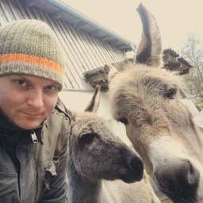
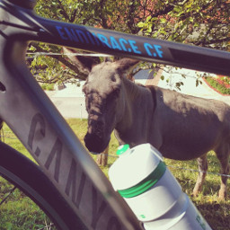

"Sorry can't, I have to walk my donkey"
-- from my T-Shirt ;)
About Me
My name is Thomas and I'm a self-employed Data Scientist from Austria. My background is in Social Sciences (master's degree) and Geoinformatics (professional degree). Besides that, I deeply enjoy lifelong learning and therefore working through various books & courses in the domains of Data Science and Programming. Also, I participate in and contribute to open source communities regularly.
If you are interested in more formal stuff, you can download my resume here.
Qualities
UPenn's character strength survey says:
- Judgement
- Love of Learning
- Kindness
I consider myself as an open-minded person, a personal quality that helps to collect much of general knowledge. And I deeply enjoy beeing creative, but sadly haven't as often possibilities to live it up as I would like. Which is the main drawback of beeing highly structured in thinking and acting. But, enough vaunt for now.
Bad Habits
- Caffeinated, too often.
- Lost in details, too much.
- Under tension, ever.
- Sarky, by nature.
Leisure
In my spare time I love going out for a hike with our donkies or doing some sport activities, especially cycling.
 